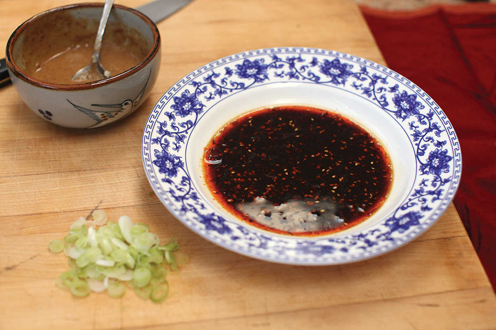
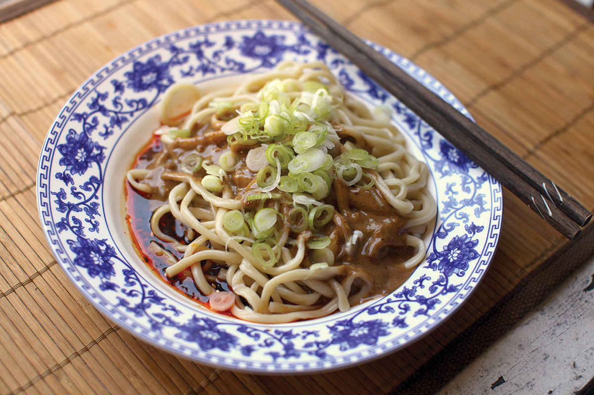
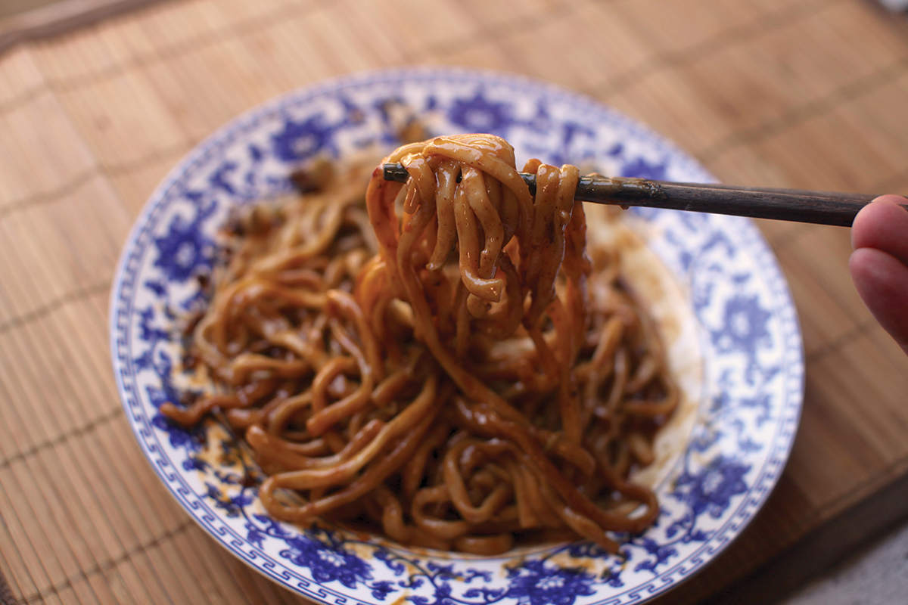

SHANGHAI-STYLE SESAME NOODLES (MA JIANG MIÀN)
Ma jiang miàn—Shanghai-style wheat noodles served with a ladle of sesame sauce and chile oil—belongs in the pantheon of simple dishes whose short ingredient list and simple preparation belie their soul-satisfying flavor. Think pizza Margherita, cheesesteak, or a peanut butter and dill pickle sandwich. On the recommendation of Ken Phang, a Shanghai native and Serious Eats reader, I headed solo to Wei Xang Zhai on Yandong Road, a popular shop that has been slinging hot bowls of sesame noodles for the better part of a century.
The restaurant was a small, scruffy, no-frills type place, and the clientele—who were jammed shoulder to shoulder into tiny tables next to complete strangers—ranged from on-duty policemen to men in suits on lunch breaks to perfectly dressed young men and women laden with shopping bags (Shanghai has no shortage of high-end shopping outlets). I glanced at the menu, but there seemed to be no point. Nearly every item on it was marked as “sold out,” and judging by how worn and tattered they were, it seems they had been sold out for years if not decades. The only two things I saw anyone eating were noodles with a meat-based sauce and sesame noodles. It was the latter I was there for.



Despite getting elbowed out of the way a few times and more than a few snags securing a table and figuring out the convoluted ticket-based ordering system, none of it mattered once I started eating. The reason? Well, the noodles were pretty much perfect. Super-fresh and springy, served on top of a pool of soy-sauce-laced chile oil, with a ladle of sesame-peanut sauce on top, a one-two-three punch of spicy, savory, and creamy.
At the restaurant, part of that savoriness comes from the chile oil they use, which is fortified with rendered fat from their meat sauce. At home I capture that umami kick with a little smidge of Marmite, an intensely umami yeast extract that Brits like to spread on toast (Vegemite will also work), or, when I’m feeling like something extra, some Better Than Bouillon beef base will punch it up even more.
Quick word of advice: Eat fast, as the sesame sauce has a tendency to get thick and grainy if you let the noodles cool too much. Just follow the locals’ lead: start slurping as soon as the plate is laid in front of you, and don’t stop until they’re all gone.